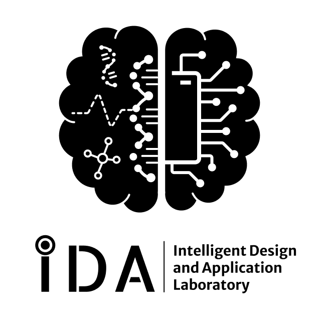
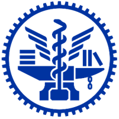

Laboratory Overview
The Intelligent Design and Application Laboratory (IDA Lab) at National Taiwan Ocean University advances research at the intersection of artificial intelligence and engineering, spanning five core areas: Intelligent EDA, Hardware and AI Security, Biomedical AI, AI Computing and Hardware Design, and Algorithm Design and Optimization.
Our mission is to develop principled, impactful AI-driven solutions: automating integrated circuit design and testing, protecting hardware and AI systems from security threats, enabling clinical decision support through medical data analysis, and advancing efficient AI computing and optimization algorithms.
Led by Dr. Chia-Heng Yen, IDA Lab brings together researchers and students from diverse backgrounds to work on interdisciplinary projects that translate theoretical advances into real-world applications.

Laboratory History
Laboratory Establishment
The Intelligent Design and Application Laboratory (IDA Lab) was officially established at the Department of Computer Science and Engineering, National Taiwan Ocean University (NTOU), under the leadership of Dr. Chia-Heng Yen.
Research Highlights
Intelligent EDA
Applying machine learning to automate IC testing, defect diagnosis, yield enhancement, and physical design, accelerating the development of reliable and manufacturable integrated circuits.
Hardware and AI Security
Advancing trustworthy computing through machine learning-based hardware Trojan detection and emerging research on the security and robustness of AI agent systems.
Biomedical AI
Translating deep learning into clinical impact through medical image analysis, cancer detection and prognosis prediction, and multimodal biomedical data analytics for precision medicine.
AI Computing and Hardware Design
Co-optimizing algorithms and silicon, spanning model compression, neural architecture search, dedicated AI accelerator design, and high-performance arithmetic circuit development.
Algorithm Design and Optimization
Developing meta-heuristic and AI-guided algorithms for parameter optimization and combinatorial problem solving in complex, high-dimensional engineering design spaces.
Latest Announcements
Graduate Student Recruitment
We are currently recruiting Master's students. If you are interested in Intelligent EDA, Hardware and AI Security, Biomedical AI, AI Computing and Hardware Design, or Algorithm Design and Optimization, please feel free to contact Dr. Chia-Heng Yen.
2025/02/27Principal Investigator
Dr. Chia-Heng Yen (顏家珩)
Assistant Professor at Department of Computer Science and Engineering
National Taiwan Ocean University
 Email: chyen [at] mail.ntou.edu.tw
Email: chyen [at] mail.ntou.edu.tw
 Tel: +886-2-2462-2192 #6679
Tel: +886-2-2462-2192 #6679

Education

Doctor of Philosophy (Ph.D.) in Computer Science and Engineering
National Yang Ming Chiao Tung University (NYCU)
Laboratory: Computer-Aided Design for G(reen)-RE(liable)-A(nd)-T(rustworthy) (GREAT) Systems Lab.
Advisor: Prof. Kai-Chiang Wu
Doctoral Dissertation: Machine Learning-Based IC Testing – Reliability and Security Perspectives
Master of Science (M.S.) in Bioinformatics and Systems Biology
National Chiao Tung University (NCTU) (currently National Yang Ming Chiao Tung University)
Laboratory: Intelligent Computing Lab.
Advisor: Distinguished Prof. Shinn-Ying Ho
Master's Thesis: Prediction of Recurrence Time after Therapeutic Surgery Using CT Images on Liver Tumor
Bachelor of Science (B.S.) in Computer Science and Engineering
National Taiwan Ocean University (NTOU)
Work Experience
Assistant Professor
Department of Computer Science and Engineering, National Taiwan Ocean University (NTOU), Keelung City, Taiwan (R.O.C.)
Research Projects
Funding Agency: National Science and Technology Council, Taiwan (R.O.C)
Project ID: NSTC 114-2222-E-019-003
Description: 本研究針對晶圓測試資料，提出一種基於圖神經網路（GNN）的GDBN檢測方法。先將晶片轉為圖結構（節點含21維多模態特徵，邊表空間關聯），再透過多尺度圖卷積擷取局部缺陷、圖注意力建模全域關係，最後以輕量模型（約12K參數）輸出可疑度，實現測試跳脫檢測。
Professional Services
Board / Committee Membership
Academic Services
Journal Reviewer
Research Topics
Intelligent EDA
Leveraging AI to automate and improve the reliability, efficiency, and manufacturability of integrated circuit design.
IC Testing & Yield Enhancement
We develop CNN-based and transformer-based methods for wafer-level defect analysis, IDDQ outlier identification, and Good-Dice-in-Bad-Neighborhoods (GDBN) detection, significantly improving testing accuracy and manufacturing yield.
View all publications →EDA & Routing
We address routing challenges in emerging materials such as graphene nanoribbons (GNR) and 3D ICs, alongside clock power optimization through multi-bit flip-flop (MBFF) utilization strategies for modern low-power designs.
View all publications →Hardware and AI Security
Ensuring trustworthiness at both the silicon and intelligence layers, covering hardware Trojan detection and the security of AI agent systems.
Hardware Trojan Detection
We develop machine learning-based methods for hardware Trojan detection and localization, leveraging structural circuit features, path analysis, and graph-based representations to provide robust protection mechanisms for chip-level security.
View all publications →AI Agent Security
We investigate security vulnerabilities and defense mechanisms in LLM-based and autonomous AI agent systems, including prompt injection, adversarial attacks, and trust boundary enforcement for safe deployment.
Biomedical AI
Applying machine learning and deep learning to bridge the gap between clinical data and actionable medical insights.
Medical Image Analysis
We develop deep learning models for the detection, segmentation, and prognosis prediction of various cancers from medical imaging data, including CT, MRI, and other modalities, targeting clinical decision support across different cancer types and imaging protocols.
View all publications →Biomedical Data Analytics
We design evolutionary and AI-based models for risk stratification and prognosis prediction using multimodal clinical and radiomic data, enabling data-driven decision support in clinical practice.
AI Computing and Hardware Design
Bridging algorithm and silicon, from model-level optimization down to arithmetic circuit design for efficient AI inference.
Model Optimization
We develop compression and efficiency techniques including quantization, pruning, knowledge distillation, low-rank factorization, and neural architecture search (NAS) to reduce model size and inference cost while preserving accuracy for real-world deployment.
AI Accelerator Design
We design dedicated hardware accelerators for neural network inference and training, targeting efficient dataflow architectures, on-chip memory optimization, and fault-tolerant accelerator designs for reliable AI deployment.
Circuit Design
We investigate high-performance arithmetic circuits, particularly adder architectures that balance speed, power, and area as fundamental building blocks for modern processors and AI accelerators.
View all publications →Algorithm Design and Optimization
Designing principled algorithms to solve high-dimensional and combinatorially complex problems in engineering and AI systems.
Parameter Optimization
We explore meta-heuristic and evolutionary strategies for hyperparameter tuning and multi-objective optimization across complex design spaces, improving convergence efficiency and solution quality.
Combinatorial Optimization
We address NP-hard combinatorial problems arising in EDA and system design using heuristic search, graph-based methods, and AI-guided optimization strategies for scalable and high-quality solutions.
Loading publications...
Teaching Courses
Undergraduate Courses
This course covers the fundamental concepts of digital logic design, including Boolean algebra, logic gates, combinational and sequential circuits, techniques for circuit reduction, and introduction to digital systems.
A hands-on laboratory course focuses on digital logic design using breadboards and CAD tools. The course emphasizes practical skills in digital logic design, including circuit construction, debugging, and design verification.
This course introduces the fundamentals and applications of Python. Topics progress from basic syntax to data structures, object-oriented programming, file handling, and commonly used libraries.
This course explores the fundamental concepts, design principles, and implementation of modern operating systems, including process management, CPU scheduling, synchronization, deadlock avoidance, memory management, and file systems.
Graduate Courses
This course covers deep learning fundamentals, model compression techniques (quantization, pruning, knowledge distillation, low-rank factorization, NAS), and hardware-accelerated deployment for real-world industry applications.
This interdisciplinary course bridges computer science and electrical engineering, focusing on IC design processes and EDA. The course enhances understanding of chip technologies and algorithmic implementation skills.
Lab Members
Master Students
許博瑄
Dept. of Computer Science and Engineering

簡胤亘
Dept. of Computer Science and Engineering
徐郁庭
Dept. of Computer Science and Engineering
沈牧宣
Dept. of Computer Science and Engineering
劉旭峰
Dept. of Computer Science and Engineering
陳秉新
Dept. of Computer Science and Engineering
李泓勳
Dept. of Computer Science and Engineering
林敬恆
Dept. of Computer Science and Engineering
鄭至傑
Dept. of Computer Science and Engineering
呂柚陞
Dept. of Computer Science and Engineering
洪子懿
Dept. of Computer Science and Engineering
Part-Time Master Students
吳允佑
Dept. of Computer Science and Engineering
吳東謙
Dept. of Computer Science and Engineering
陳威任
Dept. of Computer Science and Engineering
Undergraduate Students
Undergraduate Researchers
Undergraduate students who voluntarily participate in research projects outside of formal capstone programs.